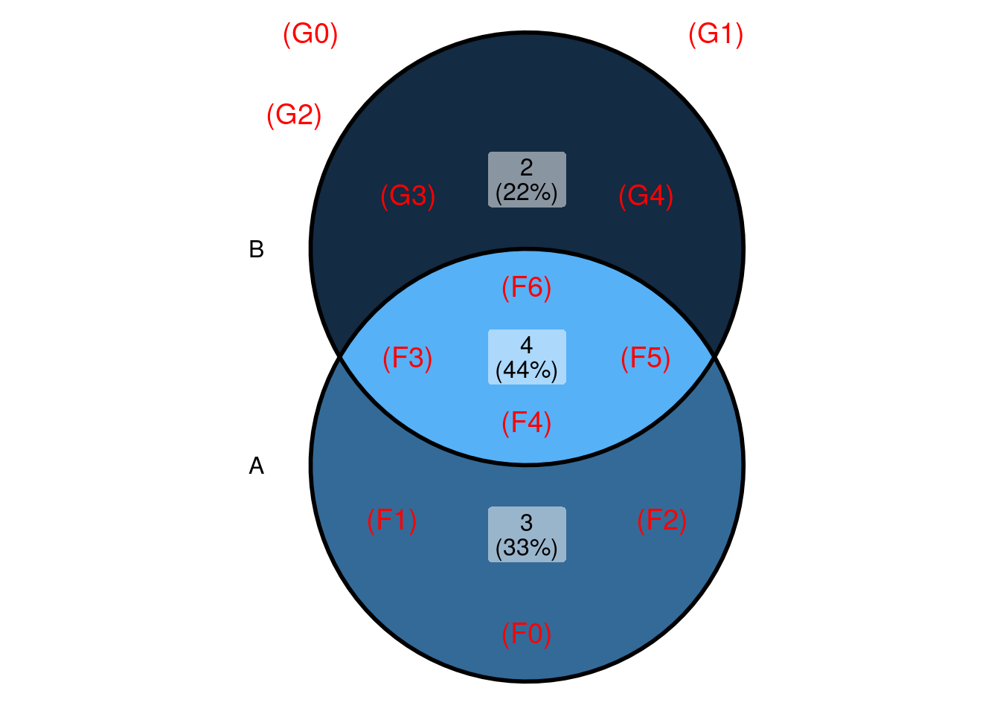
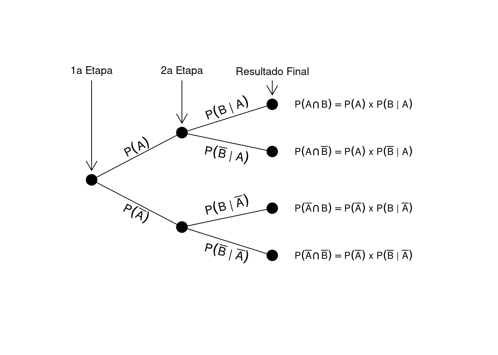
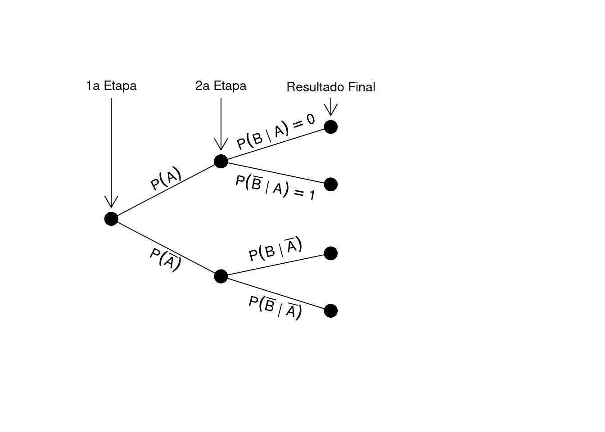

library(tidyverse)
library(gt)
library(ggVennDiagram)
source("scripts/tree_diagram.r")
source("scripts/conditional_tree.r")Probabilidade Condicional e independência
probabilidade condicional
eventos dependentes
teorema de Bayes
diagrama de árvore
Fundamentos de Probabilidade
Pacotes e funções utilizadas
Consideremos o experimento “virar uma estrutura (folha ou galho) e contar o número de itens”:
\(\Omega = \{(F0), (F1), (F2), (F3), (F4), (F5), (F6), (G0), (G1), (G2), (G3), (G4)\}\)
Definimos:
Evento \(A\): “virar uma folha”, isto é,
\[A = \{\texttt{(F0), (F1), (F2), (F3), (F4), (F5), (F6)}\}.\]Evento \(B\): “obter mais de 3 itens”, isto é,
\[B = \{\texttt{(F3), (F4), (F5), (F6), (G3), (G4)}\}.\]
O diagrama de Venn a seguir representa esses conjuntos:

Após podemos perguntar:
Qual a probabilidade de que tenham sido obtidos mais de 3 itens?
Ao informarmos que a estrutura era uma folha, sabemos que nem todos os eventos de \(\Omega\) podem ter ocorrido. Neste exemplo, somente as 7 observações do evento e \(A\) consistem de uma folha:
Destas, apenas 1 possuem mais de 3 itens, de modo a resposta à pergunta seria \(\frac{1}{7}\). Este resultado é conhecido como probabilidade condicional, denotada pelo símbolo (\(|\)). Neste exemplo específico estamos perguntando:
Dado que \(A\) OCORREU, qual a probabilidade de que \(B\) tenha ocorrido? Simbolicamente, esta questão é escrita como \(P(B|A)\).
\[P(B|A) = \frac{1}{7} = 0.14\]
Esta probabilidade condicional foi calculada pelo número de observações favoráveis à intersecção de \(A\) e \(B\) (\(\#A \cap B\)) relativa ao número de observações do evento \(A\) (\(\#A\)). Isto significa ao sabermos parte dos resultados, o espaço amostral inicial inicial foi reduzido, neste caso, ao espaço coincidente com \(A\). Portanto, temos que:
Suponha que queiramos a probabilidade de obter mais de 3 itens. Se informamos previamente que a estrutura sorteada era uma folha (evento \(A\)), reduzimos o espaço amostral apenas aos casos de \(A\). Sejam \(C = A \cap B\). Então, a probabilidade de \(B\) dado \(A\) será:
\[P(B \mid A) \;=\; \frac{\#(A \cap B)}{\#(A)} \;=\; \frac{\texttt{1}}{\texttt{7}} = \texttt{0.14}\]
A probabilidade condicional pode ser expressa genericamente como:
\[P(B \mid A) = \frac{P(A \cap B)}{P(A)}\]
o que também permite calcular
\[P(A \cap B) = P(A) \times P(B \mid A)\]
Quando lidamos com experimentos em etapas ou eventos sequenciais, um diagrama de árvore ajuda a visualizar cada estágio, indicando as probabilidades e as condicionais:

Nesse diagrama, cada ramo representa um cenário: por exemplo, ao ocorrer \(A\), \(B\) pode acontecer com \(P(B \mid A)\), resultando na intersecção \(A \cap B\). Assim, o diagrama possibilita mapear todos os cenários possíveis de maneira organizada.
digraph G {
node [shape=circle, fontsize=8];
edge [fontsize=8];
Root [label="Início"];
A [label="A"];
B [label="B"];
AA [label="A\n0.497"];
AB [label="B\n0.083"];
BA [label="A\n0.083"];
BB [label="B\n0.417"];
Root -> A [label="P(A)"];
Root -> B [label="P(B)"];
A -> AA [label="P(A|A)"];
A -> AB [label="P(B|A)"];
B -> BA [label="P(A|B)"];
B -> BB [label="P(B|B)"];
}1 Eventos independentes
No experimento “virar uma estrutura e contar o número de itens”, temos:
\[\begin{aligned} P(A) &= \texttt{0.58},\\ P(\overline{A}) &= 1 - P(A),\\ P(B) &= \texttt{0.5},\\ P(\overline{B}) &= 1 - P(B). \end{aligned}\]
Seja \(P(B \mid A) = \texttt{0.14}\). Note que \(P(B) \neq P(B \mid A)\), indicando que \(A\) e \(B\) são eventos dependentes.
1.1 Exemplo de eventos independentes
Dois eventos \(A\) e \(B\) são independentes quando conhecer a ocorrência de um deles não altera a probabilidade do outro, ou seja, \(P(B) = P(B \mid A)\).
Considere a matriz:
# echo: false
visita_df |>
gt()| idade | Da cidade | De fora da cidade |
|---|---|---|
| Até 20 | 30 | 170 |
| Mais de 20 | 60 | 340 |
Suponhamos que foram investigadas 600 pessoas, classificadas por idade e local de origem. Nesse contexto:
- \(A\): ter até 20 anos; \(\overline{A}\): ter mais de 20 anos.
- \(B\): ser da cidade; \(\overline{B}\): ser de fora da cidade.
As probabilidades são:
\[\begin{aligned} P(A) &= \frac{\texttt{200}}{\texttt{600}}, \quad P(\overline{A}) \;=\; \frac{\texttt{400}}{\texttt{600}},\\ P(B) &= \frac{\texttt{90}}{\texttt{600}}, \quad P(\overline{B}) \;=\; \frac{\texttt{510}}{\texttt{600}}. \end{aligned}\]
Sabendo, por exemplo, que a pessoa tem mais de 20 anos, a probabilidade de ela ser da cidade é:
\[P(B \mid A) = \frac{\texttt{60}}{\texttt{400}}.\]
Se \(P(B) = P(B \mid A)\), então idade e origem são independentes; do contrário, são dependentes.
2 Eventos independentes vs mutuamente exclusivos
Dois eventos são mutuamente exclusivos quando \(P(A \cap B) = 0\). Se ambos ocorrerem, excluem-se mutuamente. Logo, se \(A\) ocorre, \(B\) não pode ocorrer. Nesse caso, \(P(B \mid A) = 0\), caracterizando dependência, pois a informação de \(A\) determina que \(B\) não ocorrerá.
Dois eventos são independentes se \(P(A \cap B) = P(A)\times P(B)\). Isso significa que conhecer \(A\) não altera a probabilidade de \(B\). Se \(P(A)\) e \(P(B)\) forem não nulos, então não podem ser ao mesmo tempo mutuamente exclusivos e independentes.
A representação de eventos mutuamente exclusivos no diagrama de árvore é ilustrada por \(P(B \mid A)=0\), pois, ao ocorrer \(A\), já se sabe que \(B\) não ocorrerá. Assim, mutuamente exclusivos implica dependência. Se não há exclusividade, os eventos podem ou não ser independentes, dependendo de \(P(B)\) em relação a \(P(B \mid A)\).
